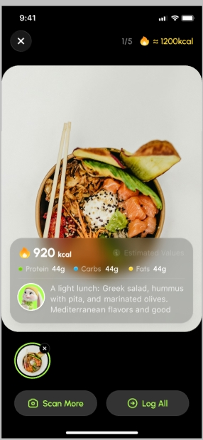
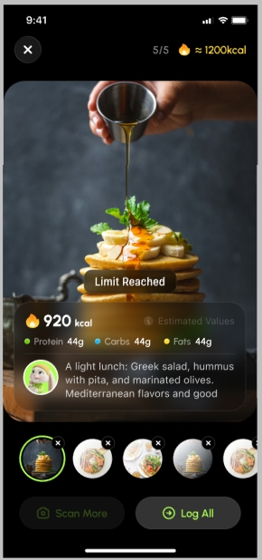
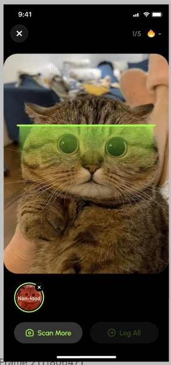

S · 科学性 / 摄入前认知 · 我主导的设计
场景：正式记入饮食日志之前，先拍照或连扫多张，得到估算热量 + 宏量 + 教练一句解读；支持多条缩略图切换、批量「Log All」，并在非食物或次数上限时给出明确反馈，避免误记。
在 SPARE 里偏 S · 科学性 与摄入前心智：先识别、再决策是否吃、最后才落库。



物料已与仓库目录 科学性-预览食物 对齐为三屏截图：m4-ui-scan.png → m4-ui-result.png → m4-ui-limit.png。若长图需拆段，请保持文件名与上顺序一致覆盖。